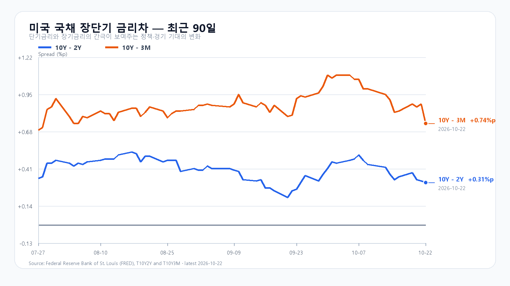
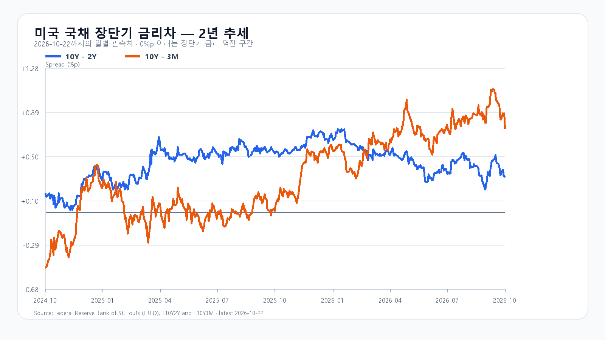

AI 설비 투자가 커질수록 반도체 주문은 늘지만, 그 비용을 감당할 기업의 현금흐름에는 부담이 쌓입니다. 미국 22일 정규장에서 SOXX는 6.79%, SMH는 5.99% 하락했습니다. 전일 3.52% 내린 KOSPI는 오늘 5,486선 부근에서 매도가 잦아드는지 시험하게 됩니다.
매출이 늘어도 투자비가 더 빨리 나간다
Meta의 3분기 매출은 646억달러로 전년보다 26% 늘었습니다. 그러나 설비 투자 등을 반영한 잉여현금흐름은 21억2천만달러 적자였습니다. 올해 자본지출 전망은 1,350억~1,450억달러입니다. AI가 광고 매출을 키우고 있어도 대규모 인프라 투자금을 회수하는 데는 시간이 걸립니다. Meta 실적 발표
Meta는 내년 1월 무의결권 C주 신설과 기존 주식 한 주당 C주 한 주를 배당하는 계획도 밝혔습니다. 향후 자금 조달 등에 쓸 주식을 확보하려는 조치입니다. 이번 발표 자체가 현금을 받는 증자를 완료했다는 뜻은 아닙니다.
반도체주는 급락 뒤 시간외에서 갈렸다
Nvidia는 정규장에서 4.40%, AMD는 8.10%, Micron은 6.26%, Broadcom은 4.31% 내렸습니다. 시간외에서는 Nvidia·AMD·Broadcom이 소폭 반등한 반면 Micron은 추가로 밀렸습니다. 지수 전체가 일제히 회복하는 흐름과는 거리가 있습니다.
Meta 실적과 AI 투자 부담은 전일 한국장에서도 이미 알려졌습니다. 국내 하락과 뒤이은 미국 매도를 서로 독립된 충격으로 모두 더하면 오늘의 하락 압력을 과대평가할 수 있습니다. 미국 매도가 삼성전자·SK하이닉스의 오늘 가격에 얼마나 더 반영되는지, 개장 뒤 매수가 이어지는지가 중요합니다.
DDR5 현물은 올랐지만 주가는 흔들린다
22일 대만시간 오후 6시 10분 기준 DDR5 16Gb 현물 평균은 61.10달러로 0.38% 올랐습니다. DDR4 16Gb는 83.117달러로 보합입니다. 현물시장의 가격 지지와 주식시장의 투자비·밸류에이션 부담이 동시에 나타납니다. DDR 현물 움직임을 HBM과 서버 메모리의 계약 단가 전체로 넓혀 읽을 수는 없습니다. TrendForce
미 재무부의 22일 금리는 3개월물 4.22%, 2년물 4.65%, 10년물 4.96%입니다. 10년물은 전일 5.13%보다 낮아졌습니다. 금리 하락은 성장주의 할인율 부담을 덜지만, 유가 상승은 기업 비용과 물가를 다시 압박합니다. 한국은행도 전일 기준금리를 3.00%로 동결하면서 향후 인상의 시기와 속도를 판단하겠다고 밝혔습니다. 한국은행 결정
전일 저점과 종가 사이에서 매수를 시험한다
전일 KOSPI는 5,740.28까지 올랐다가 5,485.98까지 밀린 뒤 5,533.77로 마쳤습니다. 오늘은 전일 저점 부근을 지키는지, 종가를 회복한 뒤에도 외국인·프로그램 매수가 이어지는지를 나눠 봅니다.
기본 종가 범위는 5,350~5,550(45%)으로 봅니다. 외국인·프로그램 순매수와 함께 5,550선을 넘기는 강세 범위는 5,550 초과~5,700(15%), 5,350선 아래에서 매도가 이어지는 약세 범위는 5,100~5,350 미만(40%)입니다. 5,550선 재이탈은 강세 판단을, 5,350선 회복은 약세 판단을 무효로 만듭니다. 예상 범위 밖의 변동도 가능합니다.
KODEX 레버리지는 전일 저점 65,385원을 첫 지지, 종가 66,770원을 반등 기준, 고점 72,300원을 저항으로 봅니다. 65,385원 아래에서 회복하지 못하면 전일 저점의 지지력을 전제로 한 판단은 접습니다. 오늘 밤 11시에는 미시간대 10월 소비심리 확정치가 나오고, 미국시간 27~28일에는 FOMC가 열립니다. 개장 초 가격보다 오전 10시와 오후 2시의 매수 지속 여부를 확인할 필요가 있습니다.
장전 시세
| 항목 | 최근값 | 원천 시각 |
| 삼성전자 NXT (OPEN) | 205,000원 · -4.43% | 2026-10-23T08:03:37.681226+09:00 |
| SK하이닉스 NXT (OPEN) | 1,186,000원 · -3.03% | 2026-10-23T08:03:37.681236+09:00 |
| 하나은행 USD/KRW 고시 | 1,326.50원 | 2026-10-23T07:53:40+09:00 |
| NQF 최근 거래 | 29,110.75 | 2026-10-23T07:53:32+09:00 |
| ESF 최근 거래 | 7,709.00 | 2026-10-23T07:53:22+09:00 |
| CLF 최근 거래 | 99.01 | 2026-10-23T07:53:22+09:00 |
| BZF 최근 거래 | 112.80 | 2026-10-23T07:44:01+09:00 |
미국 시간외 최근 거래
| 종목 | USD | 종가 대비 | 원천 시각 |
| NVDA | 213.02 | +0.38% | 2026-10-23T07:57:54+09:00 |
| AMD | 508.08 | +0.03% | 2026-10-23T07:57:16+09:00 |
| MU | 845.60 | -1.27% | 2026-10-23T07:57:51+09:00 |
| AVGO | 324.10 | +0.27% | 2026-10-23T07:56:48+09:00 |
| META | 647.02 | -0.28% | 2026-10-23T07:57:15+09:00 |
| TSLA | 373.47 | -0.30% | 2026-10-23T07:57:15+09:00 |
미국 정규장
| 종목 | 종가 USD | 등락 |
| QQQ | 704.47 | -2.86% |
| TQQQ | 66.42 | -8.52% |
| SOXX | 475.69 | -6.79% |
| SMH | 523.35 | -5.99% |
| NVDA | 212.21 | -4.40% |
| AMD | 507.93 | -8.10% |
| MU | 856.49 | -6.26% |
| AVGO | 323.24 | -4.31% |


Meta 3분기 실적 · 한국은행 10월22일 결정 · DRAM 현물 · 미 재무부 · 미국 시세 · 국내 일봉 · 미국 실업수당 · 미시간대 소비심리 · FOMC · FRED 금리차